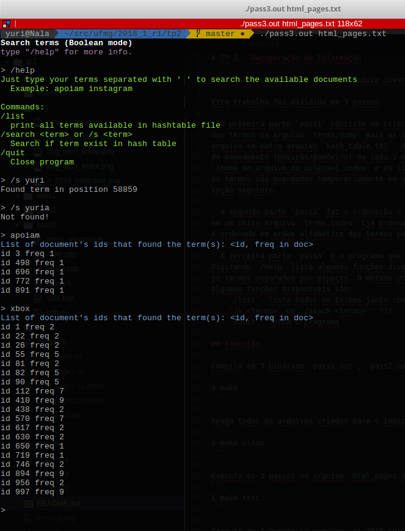

TP 2 - Recuperação de Informação
Yuri Diego Santos Niitsuma
O Trabalho consiste em criar um índice invertido para a coleção do TP1.
Este trabalho foi dividido em 3 passos.
-
A primeira parte
pass1consiste em criar um vocabulário guardando as strings
dos termos no arquivoterms.dumpmais as informações de (tamanho, posição) no
arquivo em outro arquivohash_table.tbl. Ao mesmo tempo que é criado um arquivo
de mapeamento (posição/ponteiro) de cada i-ésimo documento no arquivo
[nome_do_arquivo_da_colecao].indexe as listas de URLs em[nome_do_arquivo_da_colecao].urlist.
Os termos são guardados temporariamente em vários arquivos na pastatermsque será descrito na
seção seguinte. -
A segunda parte
pass2faz a ordenação e a união dos arquivos na pastaterms
em um único arquivoterms.index(já ordenado). Nesta etapa o arquivohash_table.tbltambém
é ordenado em ordem alfábetico dos termos para uma busca binária. -
A terceira parte
pass3é o programa que faz as consultas dos termos no índice invertido.
Digitando/helplista algumas funções disponíveis. Para efetuar uma busca basta digitar
os termos separados por espaços. O método utilizado é a busca booleana.
Algumas funções disponíveis são:/list: lista todos os termos junto com sua frequência totais/s <termo>ou/seach <termo>: ???/quit: fecha o programa
Execução
Compila em 3 binários pass1.out, pass2.out e pass3.out.
$ make
Apaga todos os arquivos criados para o índice invertido e os binários executáveis.
$ make clean
Executa os 3 passos no arquivo html_pages.txt (estimado 16 minutos utilizando um SSD)
$ make test
Executa os 3 passos no arquivo ri_2018_collection.dat (não faça isso)
$ make run
Caso deseje evitar repetir os dois primeiros passos e executar diretamente o passo 3. Execute
$ ./pass3.out <nome_do_arquivo_da_colecao>
Estrutura dos arquivos
Todos os arquivos são armazenados no formato Endianness da máquina rodada.
Nos exemplos seguintes os dados são descritos em Little Endian.
[nome_do_arquivo].urllist
Arquivo contendo lista de URLs coletadas e separados por um '\n'.
Será útil no próximo trabalho prático.
[nome_do_arquivo].index
Arquivo que mantém informações das posições da URL do no arquivo [nome_do_arquivo].urllist
e a posição do conteúdo do HTML no arquivo da coleção.
| pointer to URL | pointer to HTML content |
|---|---|
| 00 00 00 00 00 00 00 00 | 10 00 00 00 00 00 00 00 |
| 0D 00 00 00 00 00 00 00 | 61 2B 05 00 00 00 00 00 |
| ... | ... |
Os ponteiros apontam para a posição no arquivo da coleção utilizada no TP1.
|||github.com|<HTML> XXX </HTML>|||youtube.com|<HTML> XXX </HTML>|||
...
showshow.com|<HTML> XXX </HTML>|||
O i-ésimo documento é indicado ordenadamente neste arquivo. Iniciando do 0.
hash_table.tbl
Estrutura serve pra mapear o ID (hash_id) e a posição (position) da
string do termo com tamanho chars_length no arquivo terms.dump.
O hash_id é uma identificação única para cada termo.
struct HashBlock { size_t hash_id; // unique id of term size_t position; // position to char dump size_t chars_length; // length of term size_t pointer_to_term; // ponteiro para o block do termo size_t freq; // freq of term on all documents };
Exemplo antes da ordenação
| hash_id | position | chars_length | pointer_to_term | freq |
|---|---|---|---|---|
| 0 | 0 | 3 | 0 | 50 |
| 1 | 3 | 10 | 50 | 11 |
| 2 | 13 | 6 | ... | 13 |
| ... | ... | ... | ... | ... |
| n | position(n) | size(n) | ... | 5 |
Exemplo após a ordenação, observe que os hash_ids (8 bytes da esquerda) estão aparentemente,
aleatórios. Como descrito anteriormente, a ordenação foi alfabética consultando o terms.dump.

terms.dump
Contém strings concatenadas para consulta utilizando parâmetros do arquivo hash_table.tbl.
<term1><term2><term3>...<termN>

coleção de termos na pasta terms
Esta pasta serve para armazenar a frequência e posição do termo no HTML do
arquivo da coleção (não é a posição na coleção).
Ele segue a estrutura:
struct { size_t hash_id; size_t document_id; size_t position; };
| hash_id | document_id | position |
|---|---|---|
| 00 00 00 00 00 00 00 00 | 00 00 00 00 00 00 00 00 | B1 09 00 00 00 00 00 00 |
| 01 00 00 00 00 00 00 00 | 00 00 00 00 00 00 00 00 | B6 09 00 00 00 00 00 00 |
| ... | ... | ... |
Cada termo tem um ID único (hash_id) para evitar criar um arquivo
e evitar paddings dos arquivos no sistema operacional. Para cada termo é
dividido em blocos na pasta termos decidido pelo.
(hash_id / MANY_ON_DAT_BLOCK)
MANY_ON_DAT_BLOCK
MANY_ON_DAT_BLOCK é definido no term_manage.h.
Os primeiros MANY_ON_DAT_BLOCK termos são armazenados no arquivo 0.
Os próximos MANY_ON_DAT_BLOCK no 1 e assim por diante.
Observe que como a varredura segue sequencialmente nos documentos, o document_id
será ordenado nestes arquivos.
Após o primeiro passo, é feito a ordenação em cada arquivo temporário e depois
é feito a junção em um único arquivo terms.dump.
A ordenação utilizada nestes arquivos é feito utilizando MergeSort externo interativo.

Ordenação
A ordenação é feita utilizando apenas o acesso ao disco.
Merge Sort Externo
A complexidade O(n log(n)).
Lembrando que cada bloco de termo tem tamanho de 24 bytes.
Alguns testes temporal utilizando a ordenação.
| Bytes | Blocos | Tempo |
|---|---|---|
| 25790232 | 1074593 | 117.857 seconds |
| 2747616 | 114484 | 9.77569 seconds |
| 1552728 | 64697 | 6.3397 seconds |
| 680808 | 28367 | 1.99901 seconds |
| 475200 | 19800 | 1.49599 seconds |
| 395712 | 16488 | 0.920757 seconds |
| 31848 | 1327 | 0.0907093 seconds |
A ordenação é feita nos arquivos dos termos e no hash_table.tbl (alfabeticamente).
Testes
Tempo
A criação do índice invertido se mostrou muito lenta no arquivo ri_2018_collection.dat,
levando 24 horas atingindo apenas 39014 páginas analisadas.

Os motivos são:
- latência ao acesso do HD externo.
- complexidade de busca no arquivo
hash_table.tbla cada termo. Se tiver n termos
já adicionados nohash_table.tble a página provem m termos candidatos (que podem ser
adicionados ou registrado a frequência), temos uma complexidade O(nm) por página.
Um exemplo na tentativa de criar o arquivo invertido no ri_2018_collection.dat.
Após de 2.5GBs analisados, o hash_table.tbl se encontrava com 34MB e cada página levava em
média 3 segundos para ser analisada e aumentando logaritmicamente conforme o arquivo crescia.
Tornando inviável coletar quase os 300GBs do arquivo.
O arquivo de testes fornecido html_pages.txt contendo 93MB gastam 16 minutos para
criar o índice invertido.

Busca dos termos
Seguem screenshots com exemplos do programa pass3.
Busca simples de um termo

Busca com 3 termos simultâneos

Busca com 2 termos simultâneos